IOT Industrial permite adicionar sensores especializados às partes do maquinário mais propensas a degradação ou uso excessivo e podem ser usados para prever a necessidade de manutenção.


Introdução
A Internet das Coisas (IoT) se refere ao processo de conectar objetos físicos do dia a dia à Internet, incluindo objetos domésticos comuns, como lâmpadas, dispositivos médicos e acessórios, dispositivos smart e até mesmo cidades inteligentes.
Os dispositivos IoT colocados nesses objetos físicos se enquadram principalmente em 1 de 2 categorias: eles são um switch (que envia um comando para alguma coisa) ou um sensor (que coleta dados e os envia para outro lugar).
IOT Empresarial
Industrial
Agricultura
A IoT revolucionou o agronegócio de várias maneiras, inclusive com o uso de sensores de umidade. Com a instalação desses sensores nos campos, os sistemas de irrigação desperdiçam menos água.
Logística
Uma das primeiras implementações da IoT no setor de logística e transporte incluiu a identificação de containers de carga utilizando dispositivos de identificação por radio.